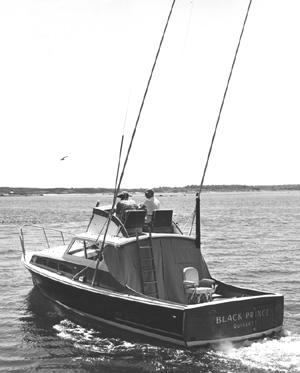

|  copyright - WHOI |
Conducted first tests of equipment and methods used in the Cooperative
Game Fish Tagging Program. Black Prince I was owned and operated
by F. J. Mather, a WHOI scientist.
BLACK PRINCE I 1954
Conducted first tests of equipment and methods used in the Cooperative
Game Fish Tagging Program. Black Prince I was owned and operated
by F. J. Mather, a WHOI scientist.
|